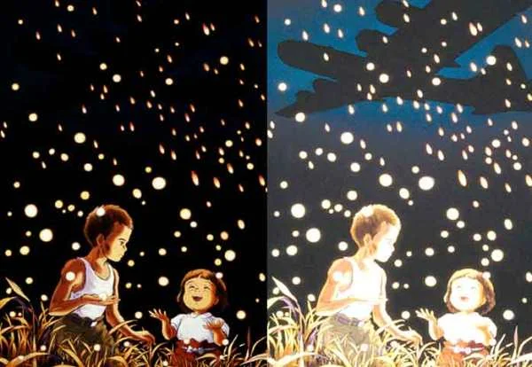

A World
of Wonder
Studio Ghibli is a world-famous Japanese animation studio founded in 1985 by Hayao Miyazaki, Isao Takahata, and Toshio Suzuki.
Based in Tokyo, it is known for hand-drawn animation, imaginative storytelling, and emotionally rich films that appeal to both children and adults. The studio’s mascot is Totoro, from My Neighbor Totoro (1988).
Ghibli has produced internationally acclaimed films such as Spirited Away, Princess Mononoke, Howl’s Moving Castle, and The Boy and the Heron. Its works often explore nature, pacifism, childhood, and strong female characters. In 2023, Studio Ghibli became a subsidiary of Nippon Television, and in 2024 it received an honorary Palme d’Or at the Cannes Film Festival.
Naming
The Studio
The name "Ghibli" was hand-picked by Hayao Miyazaki, inspired by his passion for aviation and Italian history.
- The Aircraft: Derived from the Caproni Ca.309, an Italian Saharan scouting plane nicknamed "Ghibli".
- The Wind: The word comes from the Libyan Arabic qibliyy (قبلي), referring to a hot desert wind.
- The Vision: Miyazaki intended for the studio to "blow a new wind through the anime industry."
- The Pronunciation: While the Italian source uses a hard "G", the studio is officially recognized in Japan as Jiburi (ジブリ).
Grave of the Fireflies (1988)
A complex distribution history unique to this Isao Takahata masterpiece.
Rights Divergence
Unlike most Ghibli titles owned by Tokuma Shoten, this film is owned by Shinchosha. This creates the "Legal Gap" often seen in digital bundles.
International Release
From 1993 VHS tapes by Central Park Media to the 2024 Netflix acquisition, its path has been independent of the standard Disney/Ghibli deals.
2025-2026 Future
GKIDS has re-acquired North American rights for 2025, with Anime Limited planning theatrical re-releases in the UK for 2026.
The Secret of
The Shadows

The original poster is intentionally dark to hide a devastating visual metaphor.
1. Original Poster (Dark)
Darkness represents war, death, and hopelessness. The fireflies symbolize fragile, temporary life.
2. Brightened View
Brightening the image reveals background details—the "fireflies" are actually sparks from incendiary firebombs. This changes the feeling from quiet tragedy to something emotionally diluted.
"Brightening the poster doesn’t just change how it looks — it changes how it feels. The darkness is the message."
From "Warriors of the Wind" to Global Respect
Warriors of the Wind (1985)
A heavily edited version of Nausicaä. 22 minutes were cut, removing environmental themes and renaming characters (Princess Zandra).
The Modern Policy
Miyazaki’s response was a strict "No Cuts" rule. Legend says a katana was sent to Miramax with the message: "No cuts."
Foundation & Tokuma Shoten Era
Formed after the success of Nausicaä of the Valley of the Wind (1984). The goal was to create high-quality animation without compromising artistic vision.
- Founders: Hayao Miyazaki, Isao Takahata, and Toshio Suzuki, supported by Yasuyoshi Tokuma.
- Music: Joe Hisaishi began his legendary journey composing for most Miyazaki films.
- Creative Base: Originally based in Kichijōji, Tokyo, with strong ties to Animage magazine.
The Disney Partnership
A strategic partnership with Disney helped Ghibli gain global recognition, particularly after the massive success of Spirited Away.
- Distribution: Disney became the international distributor and financed 10% of production.
- Recognition: 2001 saw the opening of the Ghibli Museum in Mitaka.
- Awards: Received the Special Golden Osella for Howl’s Moving Castle in 2004.
Independence & Evolution
The studio moved away from Tokuma Shoten control to become fully independent, navigating leadership changes and technological shifts.
- Leadership: Koji Hoshino became president in 2008 as Suzuki stepped onto the board.
- 3D Transition: 2020 saw Earwig and the Witch, Ghibli's first full 3D CG film.
- Expansion: Ghibli Park officially opened in Japan in 2022.
The Nippon TV Era
In October 2023, Ghibli became a subsidiary of NTV (42.3% stake) to ensure the studio's future due to the founders' advanced age.
NTV Management
NTV handles business management so the studio can focus purely on creativity.
Oscar Victory
2023: The Boy and the Heron won Miyazaki his second Academy Award.
Cannes Honor
2024: First film company to receive the Honorary Palme d’Or.
Visual Artistry
A commitment to traditional hand-drawn excellence.
- Method: Traditional frame-by-frame animation using watercolor and acrylic paints.
- Aesthetic: Bright colors and a "cozy European" influence mixed with detailed Japanese nature.
- Digital Policy: Computer animation is used sparingly, only to enhance the hand-drawn core.
- The Kaguya Exception: The Tale of the Princess Kaguya utilizes a unique soft watercolor, storybook style inspired by classical folk art.
Joe Hisaishi & The Sound of Ghibli
For over 30 years, Hisaishi has translated Miyazaki’s storyboards into "Image Albums" before the final score is even written.
Musical Roots
Influences ranging from Baroque counterpoint and Modal music to Jazz and Synth-based eclectic sounds.
The Leitmotif
Themes often represent the entire film rather than specific characters—perfected in Howl’s Moving Castle.
The Global
Collection
Select a title to explore its individual archive.
Total Productions: 24 Masterpieces
| Region | Theatrical / Home Media Distributor |
|---|---|
| Japan | Toho (Theatrical) / Walt Disney Studios Japan (Home Media) |
| North America | GKIDS (Current) / Shout! Factory (Home Media) / Disney (Pre-2017) |
| France/Belgium | Wild Bunch (Goodfellas) |
| Global Streaming | Netflix (Excl. US, Japan, China) / Max (USA) |